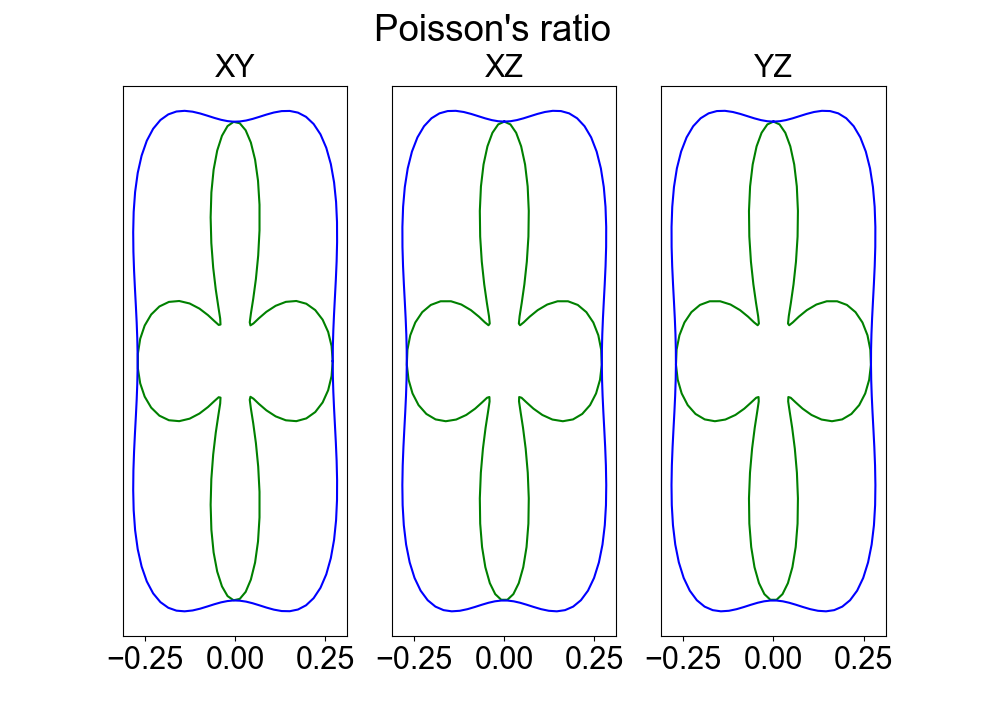

ELATE Object Usage¶
In the previous page there were quick snippits of code to start getting results quickly. Here, we will do a step by step example to explain all the features the ELATE implementation has to offer. The original website for ELATE can be found here, <http://progs.coudert.name/elate>.
1.1 Initialization of the ELATE object¶
To start off, we need to import the necessary packages that we will use in the example. We will use the ELATE object class from mechelastic.core, which can be thought of as a container for all the calculations for the ELATE code. We will also use pyvista to demonstrate how one can easily access the 3D meshes directly to customize as they please. Finally, we will use a direct elastic tensor for this example. This elastic tensor was calculated with VASP on bulk silicon and can be found in the examples folder. For direct elastic tensor input, the proper format is a list of lists containing the elastic constants. We also have the density of this structure because this will allow us to display thermal properties. The density must be in units kg/m^3
Importing ELATE object:
>>> from mechelastic.core import ELATE
>>> import pyvista as pv
>>> elastic_tensor =[
>>> [153.1305, 56.7932 , 56.7932 , 0.0000 , 0.0000 , -0.0000 ],
>>> [56.7932 , 153.1305 , 56.7932 , -0.0000 , -0.0000 , -0.0000 ],
>>> [56.7932 , 56.7932 , 153.1305 , -0.0000 , 0.0000 , 0.0000 ],
>>> [0.0000 , -0.0000 , -0.0000 , 74.7184 , -0.0000 , 0.0000 ],
>>> [0.0000 , -0.0000 , 0.0000 , -0.0000 , 74.7184 , 0.0000 ],
>>> [-0.0000 , -0.0000 , 0.0000 , 0.0000 , 0.0000 , 74.7184 ],
>>> ]
>>> density = 2281.05840 # in kg/m^3
We may initialize the ELATE object with the elastic tensor and the density. The density is not required and may be set to None if one does not have density information.
Initialization of ELATE object:
>>> elate = ELATE(s = elastic_tensor, density = density)
Note
If one wants to use a DFT code output for this example. They need to use the appropiate parser from mechelastic.parsers to get the density and the elastic tensor
1.2 Interacting with the ELATE object¶
From this object we can access the entrie ELATE code by calling the class methods and attributes. We will first start by calling the print_properties() method to view a summary of the ELATE analysis to see which quantities we can access.
1.2.1 Print Summary¶
Usage :
>>> elate.print_properties()
Output
Average properties
Voigt Reuss Hill
-------------------------------------------------------
Bulk modulus (GPa) 88.906 88.906 88.906
Shear modulus (GPa) 155.036 149.376 152.218
Young`s modulus (GPa) 64.099 61.221 62.660
Poisson`s ratio 0.209 0.220 0.215
Compression Speed (m/s) 6182.342 6113.945 6148.239
Shear Speed (m/s) 5300.975 5180.616 5241.141
Ratio Vc/Vs 1.360 1.393 1.376
Debye Speed (m/s) 4038.963 3973.205 4006.306
-------------------------------------------------------
Eigenvalues of compliance matrix
lamda_1 lamda_2 lamda_3 lamda_4 lamda_5 lamda_6
---------------------------------------------------------------
74.718 74.718 74.718 96.337 96.337 266.717
--------------------------------------------------------------
Variations of the elastic moduli
Min Max || Anisotropy
-------------------------------------------------------------------- --------------------
Young's Modulus (GPa) 122.401 175.102 || 1.431
Min Axis: (0.0, 0.0, 1.0)
Max Axis: (-0.577, 0.577, 0.577)
-------------------------------------------------------------------- --------------------
Linear Compression (TPa^-1) 3.749 3.749 || 1.000
Min Axis: (-0.99, 0.055, 0.131)
Max Axis: (0.0, 0.0, 1.0)
----------------------------------------------------------------------------------------
Shear Modulus (GPa) 48.169 74.718 || 1.551
Min Axis: (0.707, 0.0, -0.707)
Max Axis: (0.0, 0.0, 1.0)
Second Min Axis: (-0.707, -0.0, -0.707)
Second Max Axis: (-0.707, -0.0, -0.707)
----------------------------------------------------------------------------------------
Poisson's Ratio 0.058 0.349 || 6.037
Min Axis: (0.707, -0.0, -0.707)
Max Axis: (-0.707, 0.0, 0.707)
Second Min Axis: (-0.707, 0.0, -0.707)
Second Max Axis: (-0.0, -1.0, 0.0)
----------------------------------------------------------------------------------------
Compression Speed 5309.097 7215.712 || 1.359
Min Axis: (-0.707, 0.0, 0.707)
Max Axis: (0.707, -0.0, -0.707)
Second Min Axis: (-0.0, -1.0, 0.0)
Second Max Axis: (-0.707, 0.0, -0.707)
----------------------------------------------------------------------------------------
Shear Speed 4595.302 5723.288 || 1.245
Min Axis: (0.707, 0.0, -0.707)
Max Axis: (0.0, 0.0, 1.0)
Second Min Axis: (-0.0, -1.0, 0.0)
Second Max Axis: (-0.707, 0.0, -0.707)
----------------------------------------------------------------------------------------
Ratio Compression Shear Speed 0.928 1.570 || 1.693
Min Axis: (-0.707, -0.0, 0.707)
Max Axis: (0.707, -0.0, -0.707)
Second Min Axis: (0.0, -1.0, 0.0)
Second Max Axis: (-0.707, 0.0, -0.707)
----------------------------------------------------------------------------------------
Debye Speed 3767.557 4023.386 || 1.068
Min Axis: (0.707, -0.0, 0.707)
Max Axis: (0.381, -0.0, 0.925)
Second Min Axis: (0.0, 1.0, 0.0)
Second Max Axis: (0.925, -0.001, -0.381)
1.2.2 Accessing quantities¶
There are two ways to access any given quantity in the print summary, either call the wanted quantity as an attirbute or through the to_dict() method.
Attribute Usage:
>>> voigt_bulk = elate.voigtK
>>> reuss_bulk = elate.reussK
>>> hill_bulk = elate.hillK
>>> anisotropy_poisson = elate.anis_Poisson
>>> print(f"Voigt Bulk modulus : {voigt_bulk} GPa")
>>> print(f"Reuss Bulk modulus : {reuss_bulk} GPa")
>>> print(f"Hill Bulk modulus : {hill_bulk} GPa")
>>> print(f"Anisotropy in Poisson's Ratio : {anisotropy_poisson}")
Output:
Voigt Bulk modulus : 88.90563333333334 GPa
Reuss Bulk modulus : 88.90563333333334 GPa
Hill Bulk modulus : 88.90563333333334 GPa
Anisotropy in Poisson`s Ratio : 6.037439233255422
Above was just an example of the different attirbutes availible, but to see what other attributes are avaible use dir(elate)
to_dict() Usage:
>>> elate_dict = elate.to_dict()
>>> for key in elate_dict.keys():
>>> print(key + ':', elate_dict[key])
Output:
bulk_modulus_voigt: 88.90563333333334
bulk_modulus_reuss: 88.90563333333334
bulk_modulus_hill: 88.90563333333334
youngs_modulus_voigt: 155.03649359718446
youngs_modulus_reuss: 149.37560549227936
youngs_modulus_hill: 152.2184138933355
youngs_max: 175.1019299786047
youngs_min: 122.40059607547886
youngs_min_axis: (0.0, 0.0, 1.0)
youngs_max_axis: (-0.577361569343, 0.5773687973343659, 0.5773204397130386)
youngs_anisotropy: 1.4305643566525388
linearCompression_max: 3.7492937267942157
linearCompression_min: 3.7492937267942117
linearCompression_min_axis: (-0.9899110156520295, 0.055127980511725946, 0.1305261922200517)
linearCompression_max_axis: (0.0, 0.0, 1.0)
linearCompression_anisotropy: 1.000000000000001
shear_modulus_voigt: 64.09850000000002
shear_modulus_reuss: 61.22084076167894
shear_modulus_hill: 62.65967038083948
shear_max: 74.71840000000003
shear_min: 48.16865095136881
shear_min_axis: (0.7070890649809153, 0.0001381629613373221, -0.7071244834506942)
shear_max_axis: (0.0, 0.0, 1.0)
shear_min_axis_2: (-0.7071244601718367, -0.00018436062115480075, -0.7070890777249003)
shear_max_axis_2: (0.17364817766693041, 0.9848077530122079, -0.0)
shear_anisotropy: 1.5511831559375808
poisson_modulus_voigt: 0.20936132356595238
poisson_modulus_reuss: 0.21997348969585478
poisson_modulus_hill: 0.21464422784357595
poisson_max: 0.3494163383468135
poisson_min: 0.05787492425963618
poisson_min_axis: (0.7070890777249003, -3.2660969780252564e-05, -0.7071244834506942)
poisson_max_axis: (-0.7070718209701229, 1.3417388323657962e-05, 0.7071417395472906)
poisson_min_axis_2: (-0.7071244601718366, 0.00022805942991048573, -0.7070890649809153)
poisson_max_axis_2: (-1.3289480480657114e-05, -0.9999999998955298, 5.685947999088838e-06)
poisson_anisotropy: 6.037439233255422
compressionSpeed_voigt: 8743.152534460714
compressionSpeed_reuss: 8646.424429285951
compressionSpeed_hill: 8694.9229913841
compressionSpeed_max: 9091.221174861093
compressionSpeed_min: 8193.371557719742
compressionSpeed_min_axis: (0.7070890649809153, 0.0001381629613373221, -0.7071244834506942)
compressionSpeed_max_axis: (0.0, 0.0, 1.0)
compressionSpeed_anisotropy: 1.1095824363409228
shearSpeed_voigt: 5300.974695538509
shearSpeed_reuss: 5180.616478819788
shearSpeed_hill: 5241.141088701903
shearSpeed_max: 5723.28772470741
shearSpeed_min: 4595.301802302283
shearSpeed_min_axis: (0.7070890649809153, 0.0001381629613373221, -0.7071244834506942)
shearSpeed_max_axis: (0.0, 0.0, 1.0)
shearSpeed_anisotropy: 1.245465036015697
ratioCompressionShearSpeed_voigt: 2.720349150136119
ratioCompressionShearSpeed_reuss: 2.785545230903085
ratioCompressionShearSpeed_hill: 2.7521986544078523
ratioCompressionShearSpeed_max: 3.1790489923226763
ratioCompressionShearSpeed_min: 2.523209365653796
ratioCompressionShearSpeed_min_axis: (0.0, 0.0, 1.0)
ratioCompressionShearSpeed_max_axis: (0.7070890649809153, 0.0001381629613373221, -0.7071244834506942)
ratioCompressionShearSpeed_anisotropy: 1.2599227934059858
debyeSpeed_voigt: 4688.038385364817
debyeSpeed_reuss: 4598.1495576239095
debyeSpeed_hill: 4643.39765995238
debyeSpeed_max: 5000.864516324726
debyeSpeed_min: 4154.939222859331
debyeSpeed_min_axis: (0.7070890649809153, 0.0001381629613373221, -0.7071244834506942)
debyeSpeed_max_axis: (0.0, 0.0, 1.0)
debyeSpeed_anisotropy: 1.2035951064726405
As you can see, one can easily access whatever quantity they need through this mehtod.
1.2.3 Plotting Methods¶
In ELATE’s website they rpovide the 2d cross sectional plots and the 3d visualizations of the Young’s Modulus, Linear Compression, Shear Modulus, and Poisson’s Ratio. This funcationality is still availible in mechelastic, through the plot2D() and thye plot3D() methods. The input of this method is the specific elastic property you want to plot and wether you want show the plot.
The available properties to plot : “POISSON” , “SHEAR”, “YOUNG” , “LC”. If the density is provided, then one can also plot : “COMPRESSION_SPEED” , “SHEAR_SPEED” , “RATIO_COMPRESSIONAL_SHEAR” , “DEBYE_SPEED”
Note
If there are any kinks in the plots, this is due to even or odd number of points used. By using the parameter npoints one can change the number of points used.
plot2D() Usage:
>>> fig = elate.plot_2D(elastic_calc = "POISSON", show = True )
Output:
plot3D() Usage
>>> meshes = elate.plot_3D(elastic_calc = "POISSON", show = True)
Output: